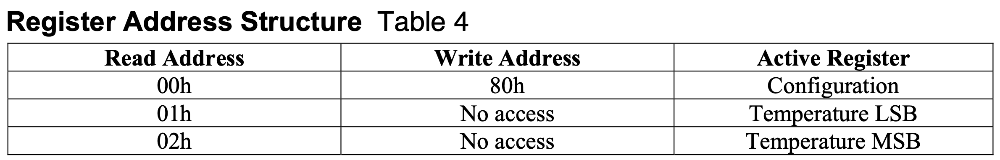

MCU-Based IoT Sensor Interface Using SPI and UART
Introduction
In this lab, we designed and built an Internet of Things (IoT) device. We used the ESP8266, which is a small Wi-Fi development board that incorporates onboard WiFi, along with some web server code to host a webpage. The MCU was interfaced with the ESP8266 module over a UART link, which allowed the MCU to communicate with and change the webpage. We also used a DS1722 Digital Thermometer to read the ambient temperature in the lab. We wrote code to interface the MCU with the temperature sensor over an SPI link. Together, the MCU communicated with the temperature sensor to receive temperature data and display it on the webpage.
Design and Testing
SPI Setup
To implement the SPI functionality of the MCU, I wrote libraries in C using the CMSIS device templates. I did this using two functions, one to initiate the SPI and the other to send/receive data from the temperature sensor. To initiate the SPI, I configured the clock, CIPO, and COPI pins for the transactions. I then configured CPI_CR1, which included setting things like the baud rate, clock phase, and clock polarity. In the send/receive function, the program waited until the transmit buffer was empty. Then, the message was sent over SPI and the program waited until the data had been received to return the received character.
Temperature Sensor
The temperature sensor we used for this lab is the DS1722 Digital Thermometer. It had both an SPI and a 3-Wire interface, but in this lab, we used SPI. I consulted the DS1722 datasheet to correctly wire up the device, which consisted of connecting the MCU pins to the sensor’s CLK, CE, SDI, and SDO, with the SERMODE being set to SPI.
As shown below in table 1, I used the register address structure from the DS1722 datasheet to communicate with it over SPI. I configured the temperature sensor by first calling the SPI send/receive function with the config register, 0x80, and then calling the send/receive function again with the resolution as the argument. Then, to read data from the most significant and least significant bits, I called the send/receive function on 0x20 for MSB and 0x10 for LSB. After sending the address to read from, to actually read the data, I need to run the SPI clock again, which is why I called the send/receive function with the dummy bits 0x00. Before sending and receiving SPI, I made sure to put the chip enable high beforehand and low afterwards, which was specified in the datasheet.

Using the information from table 2 below, a simple calculation was done to calculate the temperature value from the data received from the sensor. The raw data is divided by 256 in order to get the temperatyre out. This is because the DS1722 only uses 12 bits for temperature but sends 16 bits, meaning it shifts its data left by 4 bits (×2⁴) and fills the lowest 4 bits with zeros. When you read both bytes and combine them in code, you shift the MSB by another 8 bits (×2⁸). The unused 4 zeros cancel out part of that scaling, leaving the final number 2⁸ = 256 times larger than the real temperature. So ividing by 256 moves the binary point back, giving the correct temperature value.

Testing with Logic Analyzer
In order to test the SPI transactions, I checked them on a logic analyzer to ensure that the SCLK, CIPO, COPI, and the CE were all matching my expectations. A trace of a properly functioning SPI transaction is shown below in Figure 1.

You can see the entire SPI functionality as described above in the temperature sensor section on the trace. The MOSI (COPI) line first shows sending the addres 0x80, which is the configuration register. Then, the line shows it sending the address 0x20, which is the address of the MSB. As the dummy bits 0x00 are sent, the temperature value is shown on the MISO (CIPO) line as 0x16, which equals 22 C, the ambient room temperature. Next, the address 0x10 is sent, which is the address of the LSB. When the dummy bits 0x00 are sent, the MISO (CIPO) line shows 0xE0, indicating the decimal value of 0.875 C. This aligned with the temperature being displayed on the website, which was 22.875 C.
Technical Documentation
The source code for the project can be found in the associated Github repository.
Schematic
The circuit for this lab included wiring up the temperature sensor and the ESP8266 modules to the MCU. This is shown below in Figure 2.

Results and Discussion
I gained a lot of troubleshooting skills in this lab. There were little things to debug in my SPI protocol functions, but debugging these were not difficult using the logic analyzer. One of the issues I ran into was that my IoT WiFi connection was not showing up on the computer, which meant I could not connect to the device. I spent a lot of time trying to debug this, and the solution was that since this device draws a lot of power, I had to use an external power supply to provide power. Another issue I had was that on the logic analyzer, I was seeing strange behavior on the CIPO line. To debug this, as it was possibly an analog issue, I probed the CIPO line. Some of this can be seen in the logic analyzer trace in Figure 1 (yellow tace). I identified capacitive behavior, and had to resolder some of the pins that seemed to have a lot of solder. Another issue I had was that for a long time, I was only seeing 0s on the LSB bits. To fix this, I realized that the conversion time was quite high for the higher resolutions, so I added a delay, which made me see better values in the least significant bits.
The design met all the intended objectives. The final result of the website is shown below in Figure 3. The button to blink the onboard LED on and off functions properly, and the temperature sensor also reads accurate ambient room temperature data and allows for user resolution input.

Conclusion
In this lab, I gained a deep understanding of the SPI communication protocol, as well as configuring peripheral devices with the MCU. I also did a lot of testing on the logic analyzer, and am now very comfortable using it as a debugging tool. I also gained a deeper understanding of WiFi modules and IoT devices.